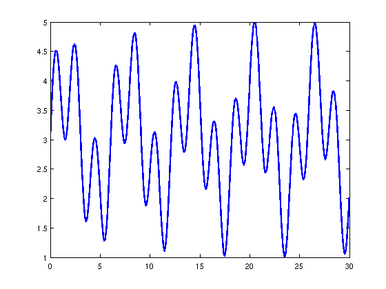
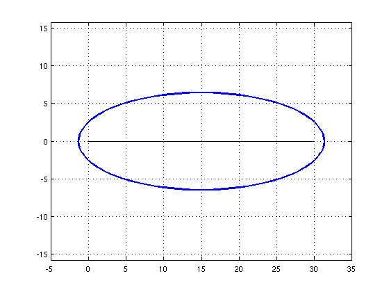
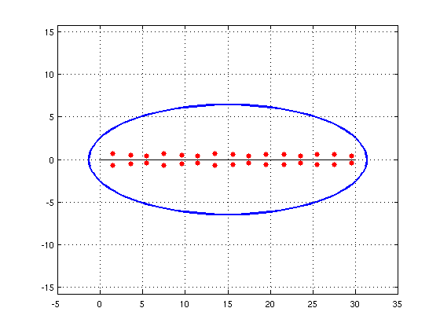
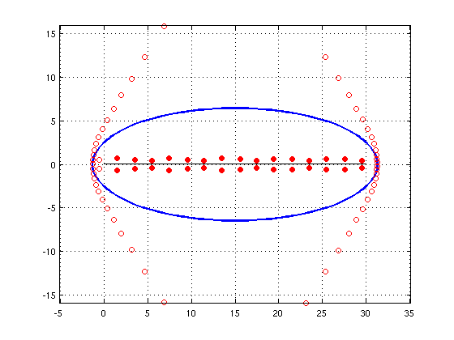

Complex roots near the real axis
Nick Trefethen, 26th October 2011
(Chebfun example roots/RootsNearAxis.m)
Here's a wiggly chebfun defined on [0,30]:
x = chebfun('x',[0 30]); f = 3 + sin(x) + sin(pi*x); LW = 'linewidth'; plot(f,LW,2)
The chebfun has no roots on the interval:
roots(f)
ans = Empty matrix: 0-by-1
It has some roots near the interval in the complex plane, however, and the chebfun will have some accuracy for these complex values. We can get an idea of the relevant region with chebellipseplot, which plots the "Chebfun ellipse" for f:
hold off, chebellipseplot(f,LW,2), grid on xlim([-5 35]), axis equal hold on, plot(x,0*x,'k',LW,1.5)
The number of digits of accuracy of the chebfun can be expected to reduce smoothly from 15 or so along the interval down to 0 on the ellipse.
This provides an easy way to calculate roots of functions in the complex plane near the interval of definition, using ROOTS with the flag 'complex':
r = roots(f,'complex'); plot(r,'.r','markersize',18)
Notice that the number of roots is is less than the polynomial degree of the chebfun:
number_of_roots = length(r) degree = length(f)-1
number_of_roots =
32
degree =
85
That's because there are quite a few additional roots of the chebfun that have nothing to do with roots of the underlying function. We can see them with the flag 'all':
plot(roots(f,'all'),'or'), axis auto, axis equal
For more details about computations like these, see Section 3.6 of the Chebfun Guide. In particular, note that the flag 'norecurse' should often be used if one wants to see all the roots of a chebfun of length in the hundreds or higher.